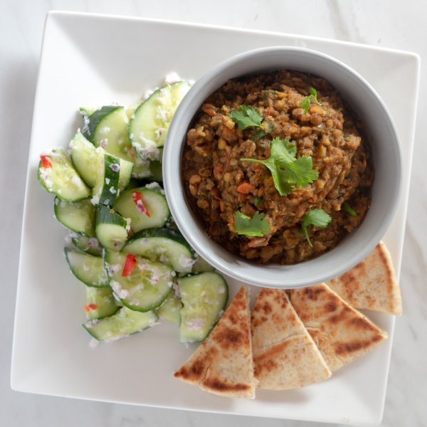

Curried Lentil Dal with a Cucumber Salad

Total Time
40 min
Nutrition (Per Serving)
629.9 kcalCalories
35 gProtein
105.9 gCarbs
10.6 gFat
Full nutrition table
| Calories | 629.9 kcal |
| Total fat | 10.6 g |
| Saturated fat | 5 g |
| Trans fat | 0.3 g |
| Cholesterol | 20.1 mg |
| Sodium | 363.7 mg |
| Carbohydrates | 105.9 g |
| Fiber | 16.9 g |
| Sugars | 19.1 g |
| Protein | 35 g |
| Potassium | 1856.6 mg |
| Calcium | 216.6 mg |
| Iron | 9.4 mg |
| Vitamin A | 1671.4 IU |
| Vitamin C | 80.2 mg |
| Vitamin D | 4.8 IU |
Cookware
Ingredients
- 1 ½ cupsbrown lentils, dried
- 4 mediumcarrots
- 24 fl ozchicken or vegetable broth
- 2 small bunchescilantro
- 2English cucumbers
- 2flatbreads or naan
- 1lemon
- ½ cupplain Greek yogurt
- 2red chili peppers
- 2 mediumred onions
- 4tomatoes
- brown sugar
- curry powder
- Dijon mustard
- garlic powder
- salt
Steps
- Rinse lentils under cold water and transfer to a medium saucepan. Add broth and spices; stir and bring to a boil. Lentils should be covered by about 1 inch of liquid; add water if needed.1 ½ cups brown lentils
4 tsp curry powder
24 fl oz chicken or vegetable broth
2 tsp salt
2 tsp garlic powder - Wash and dry the fresh produce.2 small bunches cilantro
4 tomatoes
4 medium carrots
2 medium red onions
2 English cucumbers
1 lemon - Trim off and discard the ends of the onion and remove the outer layer; small dice the onion. Add ¾ of the onion to the saucepan with the lentils. Put the other ¼ in a blender.
- Peel, and small dice the carrots. Small dice the tomatoes. Add both to the saucepan with the lentils.
- When lentil mixture comes to a boil, stir, cover with a lid and turn to low heat. Simmer for about 20 minutes or until lentils are tender.
- Preheat a skillet over medium-high heat.
- Trim and discard the ends of the cucumber; halve the cucumber lengthwise, then thinly slice crosswise on an angle. Transfer to a small bowl.
- Warm the whole chili in the preheated skillet, 1 minute per side. Remove the stem and add chili to blender. Turn the skillet to medium low heat.2 red chili peppers
- Juice the lemon and add the juice to the blender. Blend with onion, chili, mustard, sugar, salt, and yogurt. Transfer to the small bowl with the cucumber. Gently mix until evenly coated.½ tsp Dijon mustard
1 tsp salt
½ cup plain Greek yogurt
2 tsp brown sugar - Place naan bread in skillet, toasting both sides, about 1 minute per side.2 flatbreads or naan
- Using a knife, shave the cilantro leaves off the stems at a downward angle, working away from your body; discard the stems and finely chop the leaves. Put aside in a small bowl.
- Once lentils are tender, give them a quick pulse with an immersion blender. Stir in half of the cilantro.
- To serve, ladle the lentils into a bowl and garnish with the remaining cilantro. Serve with the toasted naan and cucumber salad on the side. Enjoy!